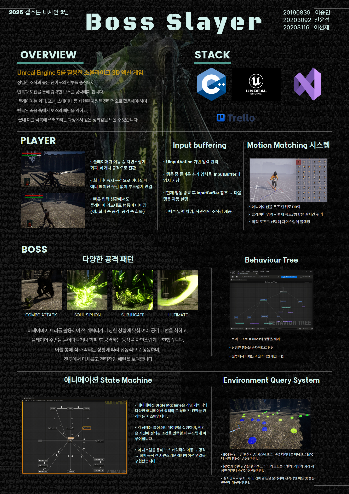

Boss Slayer
Capstone Design 2025-02

✨ 프로젝트 개요
Boss Slayer는 Unreal Engine 5로 개발된 소울라이크 액션 어드벤처 게임입니다.
정밀한 조작과 반복 도전을 통해 보스를 공략하는 고난이도 전투를 중심으로 구성되어 있으며,
회피, 포션, 스태미나 등 제한된 자원을 전략적으로 사용해 패턴을 익히고 극복하는 과정을 통해 깊은 몰입감을 제공합니다.
🚀 기술적 강점
▶️ 모션 매칭
- 다양한 애니메이션 클립을 포즈 단위로 DB화한 후, 입력 및 캐릭터 상태를 기반으로 목표 포즈를 예측해 실시간 전환
- 회피 후 공격 등 빠른 동작 간 연결에서 자연스러운 애니메이션 흐름 구현


▶️ 인풋 버퍼링
- 행동 중 들어온 입력을 버퍼에 저장하고, 해당 행동이 끝난 후 이를 수행
- 빠른 반응성과 조작감을 제공

▶️ 비헤이비어 트리
- 언리얼의 Behavior Tree로 보스의 공격, 이동, 회피를 조건 기반으로 제어
- 트리 구조로 전략적 행동 및 시각적 관리 가능

▶️ 보스 스킬 & 공격 패턴
보스는 다양한 전투 기술을 상황에 맞춰 전략적으로 구사하며, 비헤이비어 트리 로직과 연동되어 사용됩니다.


▶️ EQS 시스템
- Environment Query System으로 거리, 장애물 등을 평가하여 최적 공격 위치 탐색
▶️ 애니메이션 State Machine
- 보스의 이동/공격/회피 애니메이션 상태 전환 자연스럽게 연결
- Aim Offset으로 항상 플레이어를 바라보게 구성

👥 팀원 소개
🛠️ 기술 스택
| Unreal Engine 5 |
C++ |
GitHub |
Trello |
Visual Studio |
 |
 |
 |
 |
 |
📦 설치 및 실행 방법
1. 필수 환경
- Unreal Engine 5.3 이상
- Visual Studio 2022 (C++ 개발 도구 포함)
2. 프로젝트 클론 및 열기
git clone https://github.com/kookmin-sw/capstone-2025-02.git
cd capstone-2025-02
3. 프로젝트 빌드
Visual Studio에서 `.sln` 파일을 열고 `Development Editor + Win64`로 빌드 진행